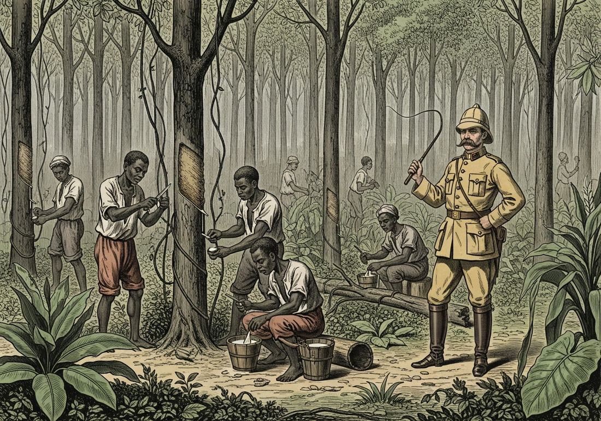

6.4 Global Economic Development from 1750 to 1900
- LO-A: Export economies and raw material extraction: Industrialization created an enormous appetite for raw materials. Non-industrialized regions responded, or were forced to respond, by developing economies centered on extracting and exporting a single commodity: rubber in the Amazon and Congo, cotton in Egypt and South Asia, palm oil in West Africa, guano in Peru and Chile, meat in Argentina and Uruguay, diamonds in South Africa. KC-5.1.II.A is the key concept. The global division of labor, core vs. periphery: The 19th-century global economy created a structural division: industrialized nations (Britain, France, Germany, U.S.) manufactured finished goods and exported capital; non-industrialized regions supplied raw materials and food. The profits from raw material exports were used to buy finished goods from industrial nations, a pattern that enriched industrial economies and kept export economies dependent. Cotton, guano, rubber, palm oil, all CED examples: Know these specific commodity-to-region pairings: cotton (Egypt → Britain; South Asia → Britain); rubber (Amazon, Congo basin); guano (Peru, Chile → Europe); palm oil (West Africa → Europe); meat (Argentina, Uruguay → Europe); diamonds (South Africa). The AP exam may ask you to identify which region produced which commodity. Environmental consequences: Export economies relying on a single commodity (monoculture) created environmental risks: soil exhaustion from cotton monoculture in Egypt, deforestation from rubber extraction, collapse of guano islands after intensive mining. The global economy of the 19th century extracted wealth from ecosystems in ways that created lasting environmental damage.
Try each question before revealing the answer.
1. Why would industrialization in Britain and Europe create demand for raw materials from distant regions like Egypt, West Africa, and South America?
2. Why would specializing in a single commodity export (like guano or cotton) be economically risky for a country in the long run?
3. The guano trade made Peru one of the wealthiest nations in Latin America in the mid-19th century. Yet by 1900 Peru had experienced economic collapse and a devastating war. What does this pattern suggest about commodity-dependent development?
4. The global economy of the 19th century was organized so that non-industrialized regions sold raw materials cheaply and bought finished goods expensively. Who benefited from this arrangement, and who was disadvantaged?
5. Why might a colonial government force local people to grow a cash crop (like cotton or rubber) rather than allowing them to continue subsistence farming?
- Explain how various environmental factors contributed to the development of the global economy from 1750 to 1900
Tap a term for its definition.
-
Definition: An economy structured around the production and export of commodities, raw materials, agricultural products, or natural resources, for consumption by industrialized nations. Significance: Non-industrialized regions developed export economies in the 19th century that supplied industrial factories with inputs, creating a global economic division between raw material producers and manufactured goods producers.
-
Definition: Agricultural production focused on a single crop, typically for export. Significance: Monoculture maximizes short-term yields for export markets but creates economic vulnerability (single commodity dependence), environmental damage (soil exhaustion), and food security risks (if the crop fails, populations may starve).
-
Definition: Accumulated seabird and bat droppings, rich in nitrogen and phosphorus, used as fertilizer. Found in massive quantities on islands off the coasts of Peru and Chile. Significance: The guano trade made Peru one of the wealthiest nations in Latin America by the 1860s; when deposits were exhausted and synthetic fertilizers replaced it, Peru’s economy collapsed, a classic commodity boom-bust cycle.
-
Definition: An elastic material derived from the latex of tropical rubber trees, essential for industrial belts, hoses, tires, and electrical insulation. Significance: Demand for rubber drove brutal labor exploitation in the Amazon basin and the Congo Free State; also explains why the Congo region was so valuable to Leopold II.
-
Definition: Vegetable oil extracted from the fruit of oil palm trees, used in soap manufacturing, lubricants, and food products. Produced primarily in West Africa. Significance: The palm oil trade made West African producers important commercial partners before formal colonization; after colonization, palm oil extraction became a tool of colonial exploitation.
-
Definition: The ratio of export prices to import prices; how much manufactured goods a nation can buy per unit of raw material exported. Significance: Non-industrialized export economies typically faced deteriorating terms of trade, raw materials became relatively cheaper while manufactured goods became more expensive, systematically enriching industrial nations at the expense of producers.
-
Definition: A crop grown for commercial sale rather than for local consumption; typically produced for export to industrialized nations. Significance: Colonial governments often forced or incentivized the conversion from subsistence agriculture to cash crop production, creating commodity dependence and food security vulnerabilities in colonized regions.
-
Definition: An economic framework describing the relationship between industrialized “core” nations (that manufacture and export finished goods) and non-industrialized “peripheral” regions (that supply raw materials). Significance: Captures the structural inequality of 19th-century global trade: industrial nations captured manufacturing profits while peripheral regions remained dependent on commodity exports.
🏭 Why the Global Economy Needed the World’s Resources
The Industrial Revolution that began in Britain in the late 18th century created an insatiable demand for two things: raw materials to feed factories, and food to feed the growing urban populations that worked in those factories. British cotton mills could spin enormous quantities of thread, but they needed cotton fiber to do it. European soap factories could produce thousands of tons of soap, but they needed palm oil as an ingredient. European farms couldn’t grow enough food to feed rapidly urbanizing populations. They needed grain, beef, and other food imports.
The CED identifies this dynamic as KC-5.1.II.A: the need for raw materials for factories and increased food supplies for growing urban populations led to the development of export economies around the world that specialized in the commercial extraction of natural resources and the production of food and industrial crops. Crucially, the CED notes that the profits from these raw material exports were used to purchase finished goods from industrial nations, a pattern that systematically favored industrial economies over raw material producers.
This created what we now call the core-periphery structure of the global economy: industrial nations at the “core” captured manufacturing profits and exported expensive finished goods; non-industrialized regions on the “periphery” supplied cheap raw materials and bought those finished goods with their commodity earnings. The exchange looked like free trade; structurally, it kept peripheral economies dependent.
🌿 Cotton: The Fiber That Drove Industrial Capitalism
Cotton was the most important raw material of the Industrial Revolution. British cotton mills in Lancashire and Manchester transformed raw cotton into thread and cloth, the first mass-produced industrial commodity. By 1860, cotton textiles accounted for nearly half of Britain’s total exports.
But Britain couldn’t grow cotton. Two regions were developed as major cotton suppliers: Egypt and South Asia. In Egypt, the ruler Muhammad Ali launched large-scale cotton cultivation in the Nile Delta in the 1820s, using forced labor to build irrigation canals. Egyptian cotton was prized for its long fibers, ideal for fine textiles. The American Civil War (1861–65) dramatically increased demand for Egyptian cotton when Southern U.S. supplies were cut off.
In South Asia, the East India Company and later the British Raj converted large areas of the Deccan Plateau to cotton monoculture. Indian weavers, who had once produced some of the world’s finest cotton textiles, found their products undercut by cheaper British machine-made cloth and were forced into growing raw cotton for British mills instead. India went from textile exporter to raw material supplier, a deindustrialization imposed by colonial policy.

Workers in colonial export economies extracted rubber, cotton, palm oil, and other commodities under conditions of coerced or exploitative labor. Profits flowed to industrial nations; physical costs were borne by the producing regions (Google Gemini, 2025), commercially licensed.
💨 Rubber: Boom, Bust, and Brutality
Rubber became one of the most sought-after commodities of the late 19th century as industrial machinery required rubber belts and hoses, and the bicycle and early automobile created demand for rubber tires. Two regions became major rubber suppliers: the Amazon basin in South America and the Congo basin in Central Africa.
In the Amazon, the rubber boom (1850s–1910s) produced spectacular wealth for rubber barons in cities like Manáus, where an opulent opera house was built in the middle of the jungle. Indigenous Amazon peoples were forced into brutal debt peonage to tap rubber trees. The boom ended when Henry Wickham smuggled rubber tree seeds out of Brazil to Kew Gardens in London, enabling efficient rubber plantations in British Malaya that outcompeted Amazon wild rubber.
In the Congo, Leopold II’s Congo Free State used systematic terror to force rubber collection: villages that failed to meet rubber quotas had hands cut off as punishment. The hands of workers and children became a kind of currency of colonial terror. This regime killed an estimated 10 million people and provoked one of the first international human rights campaigns, led by journalist E.D. Morel and writer Joseph Conrad (whose Heart of Darkness drew on Congo atrocities).
🐦 Guano, Palm Oil, Meat, and Diamonds
The CED specifically lists these additional commodity examples, and the AP exam may test them directly. Know the commodity, the region, and the connection to industrial demand.
- Guano (Peru and Chile): Seabird droppings, enormously nitrogen-rich, were the world’s best natural fertilizer before synthetic fertilizers existed. Peruvian and Chilean coastal islands held deposits hundreds of feet deep from millennia of seabird nesting. European farmers desperately needed fertilizer as population growth demanded higher agricultural yields. Peru earned over $2 billion from guano exports (1840–1880) but failed to industrialize or diversify, when the deposits were exhausted, the economy collapsed. The War of the Pacific (1879–84) between Peru, Bolivia, and Chile was partly driven by competition for remaining nitrate deposits.
- Palm oil (West Africa): Used in soap manufacturing, lubricants, and food products. West African producers, especially in what is now Nigeria, had traded palm oil with Europeans since the 18th century. As industrialization increased soap demand and colonization reduced African bargaining power, palm oil became a major colonial export commodity. The palm oil trade was one reason Britain was particularly interested in West African territories.
- Meat (Argentina and Uruguay): The development of refrigerated steamships in the 1870s–1880s made it possible for the first time to ship frozen beef from South America to Europe. Argentina and Uruguay had vast grasslands ideal for cattle ranching. British investment in Argentine railways and meatpacking plants fueled the beef export boom, making the River Plate region one of the most economically dynamic areas of the world by 1900, see also Topic 6.5.
- Diamonds (South Africa): The discovery of diamonds near Kimberley in 1867 and gold on the Rand in 1886 transformed South Africa from a marginal British colonial concern into the most economically valuable territory in sub-Saharan Africa. Cecil Rhodes built the De Beers diamond company and used his wealth to pursue British imperial expansion northward (Rhodesia). The Anglo-Boer Wars (1880–81, 1899–1902) were fundamentally about British control over South Africa’s mineral wealth.
🌳 Environmental Consequences of Export Economies
The transformation of global ecosystems to serve industrial demand had lasting environmental consequences. Cotton monoculture exhausted soils in Egypt and India. Rubber extraction required clearing vast forest areas in the Amazon. Guano islands were completely stripped within decades, their ecosystems permanently disrupted. Sugar plantations in the Caribbean had deforested entire islands by the 18th century; similar patterns followed wherever commercial agriculture replaced diverse ecosystems.
The global division between industrial core and raw material periphery also had a political-ecological dimension: environmental costs, deforestation, soil erosion, biodiversity loss, water depletion, were concentrated in producing regions, while industrial benefits were concentrated in consuming regions. This pattern of externalizing environmental costs to the periphery has continued into the 21st century.
These videos will help you review Global Economic Development from 1750 to 1900 and solidify key concepts before your exam.
- The spread of the Black Death disrupted European agricultural production and created demand for imported food
- The Industrial Revolution in Britain and Europe created demand for raw material inputs and food for urban factory workers
- The Columbian Exchange introduced new crops to Europe that required tropical growing conditions unavailable in Europe
- European nations sought to reduce their dependence on Asian luxury goods by developing alternative supply chains
- A reciprocal exchange of equal value between industrialized and non-industrialized nations
- A system of barter exchange that bypassed monetary markets entirely
- An early example of fair trade agreements designed to compensate producers in developing nations
- A core-periphery relationship in which industrial nations received raw materials and non-industrial regions received manufactured goods
- Indian textile workers chose to abandon their craft in favor of the better wages available in agricultural labor
- New agricultural technologies made cotton farming far more profitable in India than traditional textile manufacturing
- The Industrial Revolution gave Britain a manufacturing cost advantage that, combined with colonial policies removing trade protections, converted India from a textile exporter to a raw material supplier
- The East India Company actively promoted Indian textile production to generate export revenue for the British Crown
- Economic dependence on a single commodity export created vulnerability to boom-and-bust cycles that undermined long-term development
- Wars of national liberation successfully freed Latin American nations from European economic control
- European nations deliberately destroyed Latin American commodity economies to prevent regional competition
- Industrial nations provided development loans to raw material producers that stabilized their economies over time
- Colonial administrations developed humanitarian programs to improve living standards in commodity-producing regions
- The rubber trade was primarily organized through free market mechanisms that benefited producers and consumers equally
- Private companies rather than governments were primarily responsible for the development of export economies in Africa
- Industrial demand for commodities like rubber created economic incentives for extreme coercion and violence in extraction regions
Answer parts A, B, and C. Each requires a separate short response. Do not write a full essay.
Part A
Briefly describe ONE specific commodity export economy that developed between 1750 and 1900, identifying the commodity, the producing region, and the industrial nation that consumed it.
Part B
Briefly explain ONE way the exchange pattern described in the excerpt, raw materials exported, finished goods imported, was economically disadvantageous for non-industrialized producing regions in the long run.
Part C
Briefly explain ONE way the development of export economies was connected to or enabled by European colonial expansion in the period 1750–1900.
Write a full essay with a thesis, contextualization, evidence, and historical reasoning. Apply causation or argumentation. A strong response will acknowledge short-term benefits while arguing about the long-term structural disadvantages for non-industrialized regions.